Boat
10 touches · 517 points

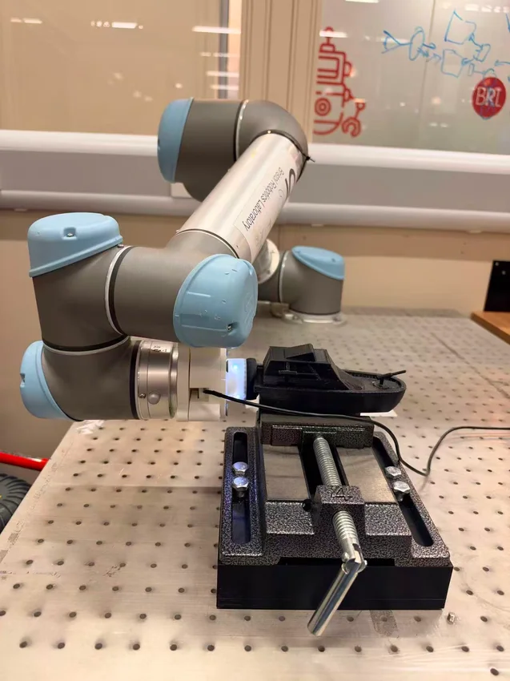
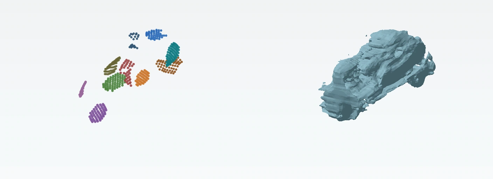
Reverse view

Six laboratory captures · Original marker points · B850
10 touches · 517 points


8 touches · 376 points
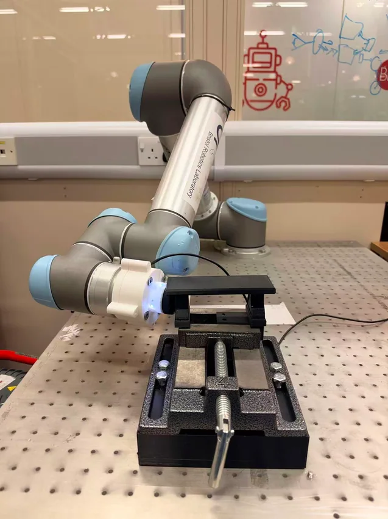
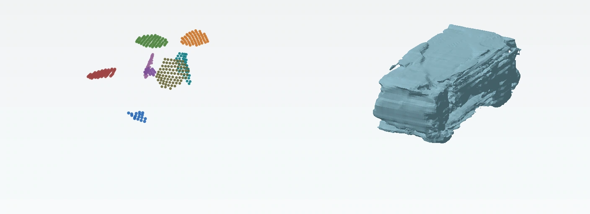

10 touches · 476 points
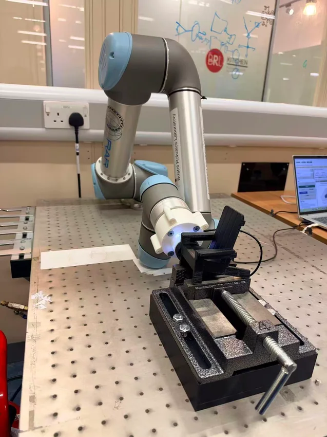


8 touches · 525 points
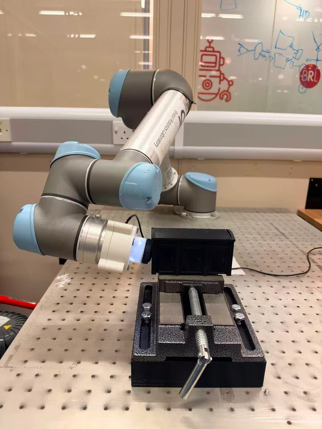
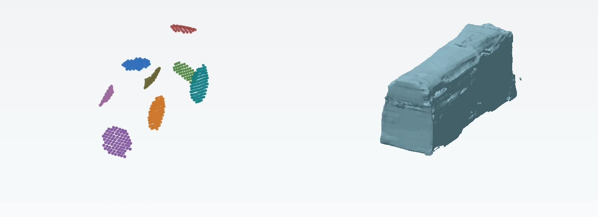

10 touches · 414 points
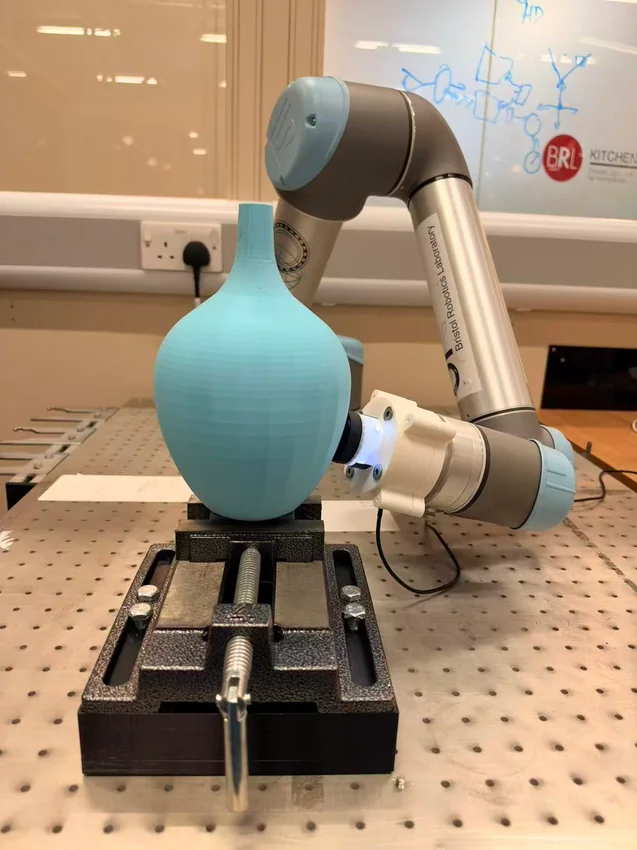
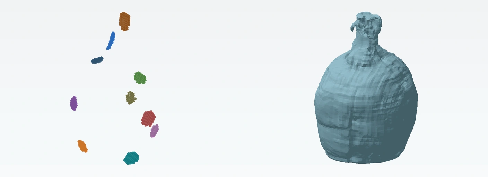
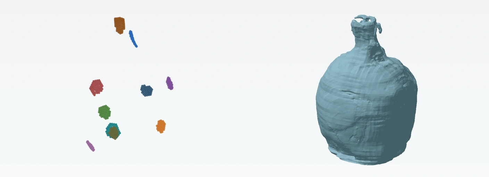
10 touches · 444 points
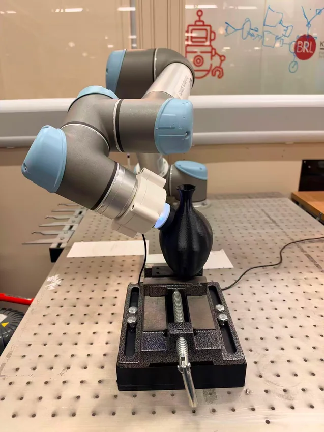
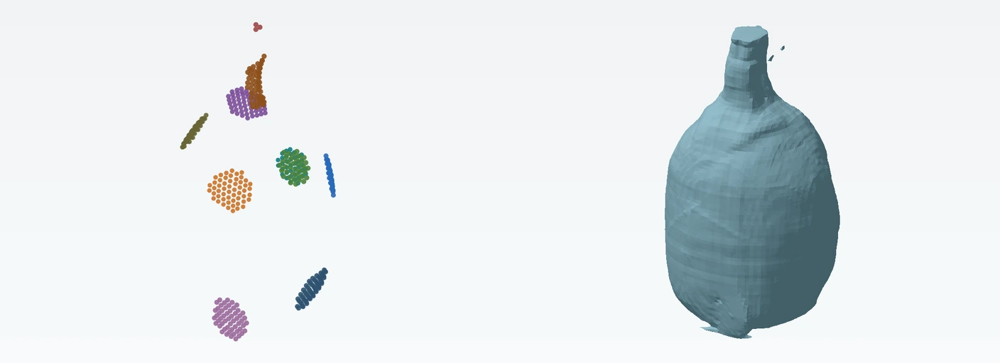
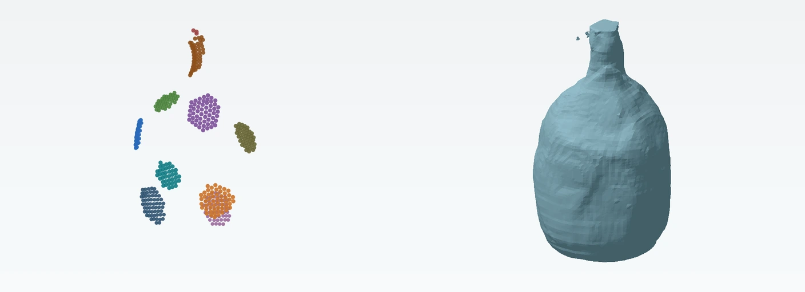